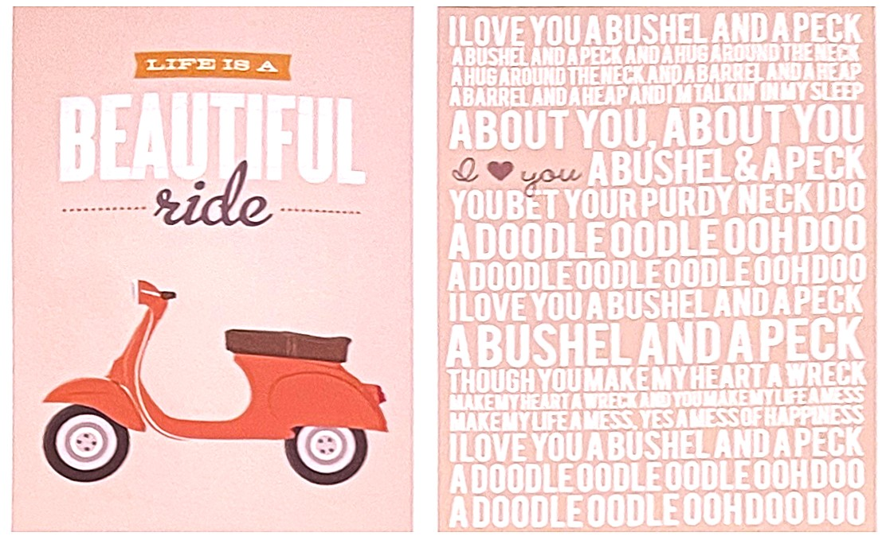
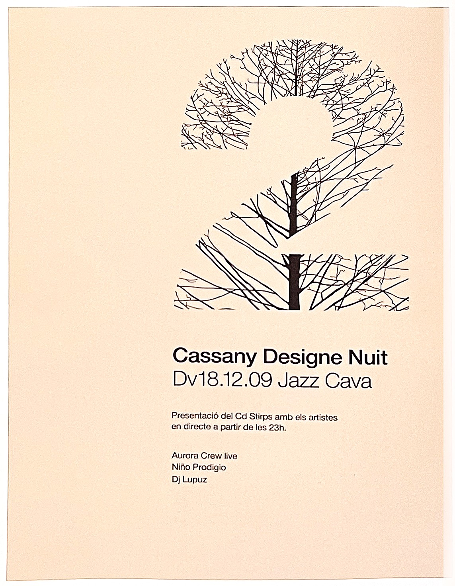

베이지색은 연한 노란색과 회색의 중간색이다. 심리학계에서 예민한 성격을 부드럽게 하는 방법으로 옷과 집안 색을 베이지 계열로 바꾸는 것을 추천할 정도로, 베이지색은 심리적 안정감을 주며 다른 색과 조합해서 사용할 때 주변 색상을 잘 살린다.
1. 색의 성격오랜 시간 만들어진 색상이 가지고 있는 성격 :
가정적, 원만함, 건실한 성품, 성실, 보수적, 모성
2. 색의 영향사람이 인지했을 때 느낌 :
편안, 안정, 이성적인 사고, 부드러움
3. 색의 처방색상을 의도적으로 활용할 수 있는 방법 :
스트레스 해소, 신경 안정

* 베이지색을 사용할 때는 사용하는 강조색이 너무 강하지 않는 것이 좋다. 약간 저채도의 강조색을 사용하면 더욱 고급스러운 느낌을 줄 수 있다.
** 많은 문자에 의해 느껴질 수 있는 역동성이 베이지를 사용하여 진정되었다.
*** 바탕을 베이지색으로 지정하여 정적인 느낌을 주었습니다.
[참고문헌]:
[1] 좋아 보이는 것들의 비밀 편집&그리드, 이민기 지음, 길벗, 2015.5.1.
....
....
....
....
....
....
....